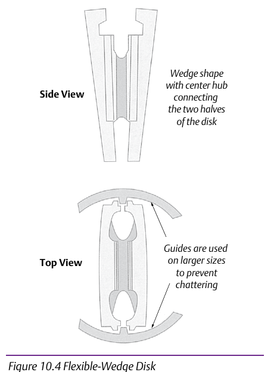
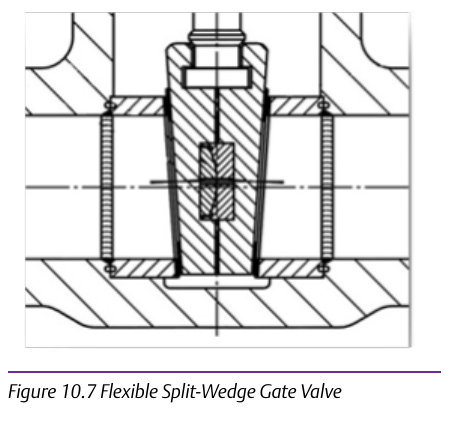
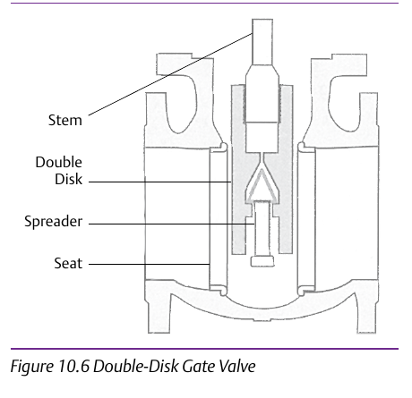

Activity: Match the Variant to the Failure Mode




Given a named failure mode (chattering at large size, high required actuation torque, or wear/erosion from repeated cycling), select and defend the gate-valve variant that addresses it, and explain why the other variants would still exhibit that failure mode. (Content credited to IPT's Pipe Trades Handbook by Robert A. Lee.) Scope note: this module covers gate-valve internal variants only — CVH ch10 catalogues 8+ valve families total; a broader survey was considered and rejected as too shallow to hit the evaluate bar for any single family. Component Index: cvh-cmp-solid-wedge-gate-valve, cvh-cmp-flexible-wedge-disk, cvh-cmp-flexible-split-wedge-gate-valve, cvh-cmp-double-disk-gate-valve.